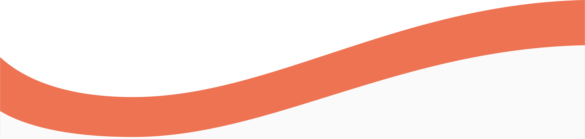

O projekcie

Dlaczego to robimy
Stworzyliśmy ten projekt z myślą o rozpowszechnianiu informacji o zasadach i zachowaniu podczas pandemii koronawirusa.
Rozumiemy też, że w ciągu ostatniego roku rozpoczęło istnieć całkiem sporo podobnych projektów, dlatego w naszym także radzimy o różnych sposobach spędzania czasu w domu bez wychodzenia na zewnątrz.
Co robimy
Używamy naszych maskotek jako most do przekazywania informacji nie tylko dorosłym, ale także dzieciom. Są głównymi bohaterami projektu i można ich znaleźć na większości naszych produktów
Nasz zespół
Denys Kurochka
Nikodem Stochel
Mateusz Żaba
Oleksandra Zihura